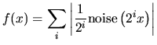
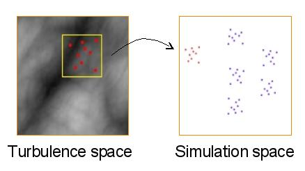
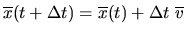
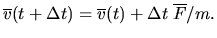
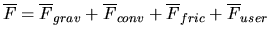
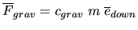
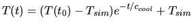
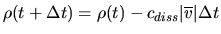
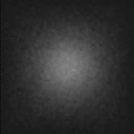
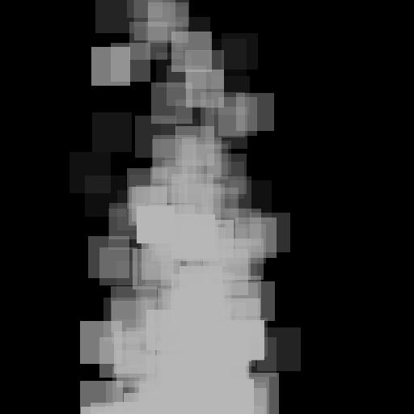

Required libraries:
Links:
INTRODUCTION The goal of my final project was to implement as much of Holtkamper's paper describing a real-time and interactive smoke and steam simulation [1] as possible. Holtkamper's method emphasizes real-time simulation and visually correct interaction between the smoke and objects in the virtual environment. Although I did not have time to implement the interaction of the smoke with objects in the environment, my project allows for different visual styles of smoke and arbitrary wind-like forces to be applied to the smoke. BACKGROUND Three major previous techniques for simulating smoke are particle system simulation, image synthesis and physically-based simulation. In particles systems, single particles or clusters of particles move through the simulation space. Their positions and velocities are updated according to simple force equations. Particle systems tend to be much more flexible than other simulation methods. Image synthesis methods of smoke simulation typically modulate Perlin's noise function [2] to yield density for display. However, image synthesis methods are limited by their inability to easily include arbitrary objects in the simulation. Physically-based simulations of smoke typically compute the Navier-Strokes equations. This can yield high-quality renderings, but the computational cost is high. Equation solvers of this sort can also be limited by their solution domain; it can again be difficult to include arbitrary objects. SIMULATION OVERVIEW The simulation approach taken by Holtkamper involves combining particle systems with image synthesis and some rendering tricks. The particles are rendered as semi-transparent textured billboards. 
TURBULENCE SPACE
The turbulence space is where the turbulent appearance of the smoke is
calculated. Turbulence space is nothing more than a function
modulating Perlin noise:

At certain intervals, sources release new particle clusters into the
simulation. A source maintains its position in the turbulence space.
Within the volume of the source, the turbulence space is sampled at
random positions, one for each particle in the new cluster. The
sampled values are assigned as densities to the particles. After
generating a new cluster, the source moves through the turbulence
space in a direction opposite the velocity of the cluster it just
created and the cluster is released into the simulation space. The
movement of the sources through turbulence space contributes to the
turbulent look of the smoke.

PARTICLE SIMULATION Once a particle cluster is released into the simulation space, it is now under control of the particle system. Each cluster has a position, velocity and temperature. The individual particles in each cluster maintain their own densities. The position and velocity of each cluster are updated each timestep by the equations 
and

The force is given by the sum of gravitational, convection,
frictional and user-defined forces:


 
 The smoke also gradually dissolves during its movement due to a dissipation calculation applied to each particle that attenuates its density: 
The values of the constants in these equations have physical bases
that are explained in Appendix A of the paper.
PARTICLE RENDERING The particles are rendered as semi-transparent textured billboards with alpha values set to their densities. The billboards are oriented to always face the viewer. In order to reduce rendering artifacts from alpha blending, the particles are sorted and rendered in back-to-front order. The images below show the Gaussian texture used and what the simulation looks like without and with the texture applied.



CONCLUSIONS My simulation runs in real-time, as desired. I ran the simulation >1000 clusters with 10 particles/cluster at 1000x1000 resolution and the framerate was real-time. The test machine was a P4 2.4GHz using a GeForce4 Ti 4200 graphics card. I think the simulation looks reasonably realistic. The movies (linked at the top of this page) demonstrate the simulation much better than still pictures. Compared to the movies provided by Holtkamper, I think my simulation lives up to the visual quality of his. FUTURE WORK One of my original extended goals was to include objects in the simulation that the smoke would interact with. A method to do this is described in the paper, albeit not entirely clearly. Ideally the objects could move dynamically. And as always, it would also be neat to displace some of the processing of the simulation to the GPU. REFERENCES [1] Holtkamper, Thorsten. Real-time gaseous phenomena: a phenomenological approach to interactive smoke and steam. Proceedings of the 2nd international conference on Computer graphics, virtual reality, visualization and interaction in Africa, pp. 25-30, 2003. [2] Perlin, K. An image synthesizer, ACM SIGGRAPH Computer Graphics, v.19 n.3, p.287-296, Jul. 1985 |